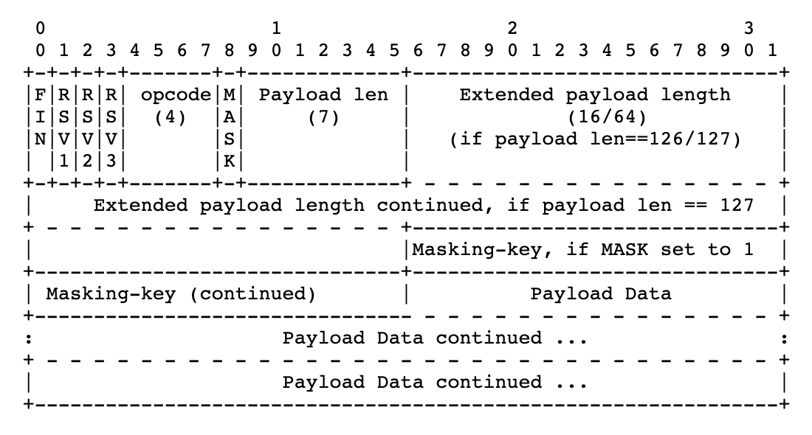
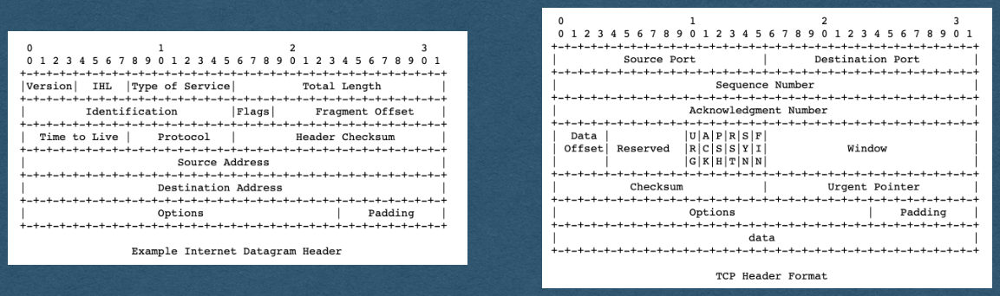
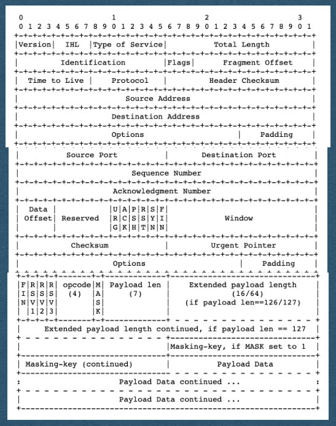

WebSocket Frames
CSE312 — Web Development
WebSockets
WebSockets
- Last time we saw how to establish a WebSocket connection
- Today, we'll parse and send messages over the socket
WebSocket Frame
https://tools.ietf.org/html/rfc6455#section-5.2

Protocols Sidenote
- Many of the protocols used in the Internet define the order and meaning of bits that are sent
- Sender assembles the bits of a message following the protocol
- Send the bits through the Internet
- Receiver interprets the bits following the same protocol to extract meaning from the bits
- Protocols enable communication using only 1's and 0's
Protocols Sidenote
- TCP/IP protocol headers shown here
- Routers read the IP header following this protocol to know how to route a packet
- Endpoints follow the TCP protocol to assemble a sequence of packets and send it to the process using the given port

WebSocket Frame
- The WebSocket protocol functions the same way
- Client and server agree to follow this protocol
- Send bits in this specific order
- We can rely on the client following this protocol
Network Stack
IP
- An IP packet containing a WebSocket frame looks like this
TCP
WebSocket

Parsing Bits
- We will have to read frames at the bit level
- It's already in a byte array when we receive it
- We can access any byte and extract the bits we need
- Helpful to recall that bytes are represented as 8-bit integer values (0-255)
Parsing Bits
- Bit Example - To read the opcode:
- get the byte at index 0
- Bitwise AND (& in most languages) this byte with a "bit mask" of 15
- Since 15 == 00001111 as a byte this will 0 out the 4 higher order bits
- We now have an int from 0-15 representing the opcode
WebSocket Frame
- FIN: The finish bit
- 1 - This is the last frame for this message
- 0 - There will be continuation frames containing more data for the same message
WebSocket Frame
- RSV: Reserved bits
- Used to specify any extensions being used
- [You can assume these are always 000 for the HW]
WebSocket Frame
- opcode: Operation code
- Specifies the type of information contained in the payload
- Ex: 0001 for text, 0010 for binary, 1000 to close the connection, 0000 for continuation frame
WebSocket Frame
- MASK: Mask bit
- Set to 1 if a mask is being used
- Set to 0 if no mask is being used
- This will be 1 when receiving messages from a client
Frame Length
- The next bits will represent payload length in bytes
- Similar to Content-Length
- The length can be represented in 7, 16, or 64 bits
Frame Length
- If the length is <126 bytes
- The length is represented in 7 bits, sharing a byte with the MASK bit
- The next bit after the length is either the mask or payload
Frame Length
- If the length is >=126 and <65536 bytes
- The 7 bit length will be exactly 126 (1111110)
- The next 16 bits represents the payload length
Frame Length
- If the length is >=65536 bytes
- The 7 bit length will be exactly 127 (1111111)
- The next 64 bits represents the payload length
- 18,446,744,073,709,551,615 max length!
- 16 exabytes / 16,000,000 terabytes
Frame Length
- To read the frame length, read the 7 bit length
- If the value is 126, read the next 16 bits as the length
- If the value is 127, read the next 64 bits as the length
- Else, the value itself is the length
Mask and Payload
- After all the length bits:
- If the MASK bit == 1, the next 4 bytes (32 bits) is the mask
- If the MASK bit == 0, the payload begins
Mask and Payload
- If there is a mask, read these 4 bytes
- The mask will be randomly generated by the client for each message
- You must parse this each time a message is received
Mask and Payload
- Each 4 bytes of the payload has been XORed with the mask by the client
- Read the payload 4 bytes at a time and XOR the bytes with the mask
- If the length is not a multiple of 4, use only the bytes of the mask that are needed
- Ie. Always reading 4 bytes will cause an index out of bounds error
XOR Example
- If 4 bytes of the message are:
- 01001001_01000011_01010101_00100001
- And the random mask is:
- 01111011_00100010_01110101_01110011
- This part of the payload will be "message XOR mask":
- 00110010_01100001_00100000_01010010
- When we receive these bits and XOR it with the mask again we get the original message bits:
- 01001001_01000011_01010101_00100001
Mask and Payload
- Once the payload is XORed with the mask 4 bytes at time we get the entire message
- Then process the message
Sending Frames
- To send a message to a client:
- Use this same format
- Assemble a byte array with the appropriate values
- Append your payload as bytes
Sending Frames
- Do not use a mask when sending frames to a client
- No caching concerns on server to client frames
Sending Frames
- Example: For our purposes in the HW
- RSVs are always 0
- opcode is either 0001 (Sending text), 1000 (close connection), or 0000 (continuation frame)
Sending Frames
- Check the length of your payload to determine how many bits are needed for the length
- Follow the same format for payload length as the received messages
Sending Frames
- MASK bit is 0 and there are not mask bytes
- After payload length, immediately add the bytes of the payload